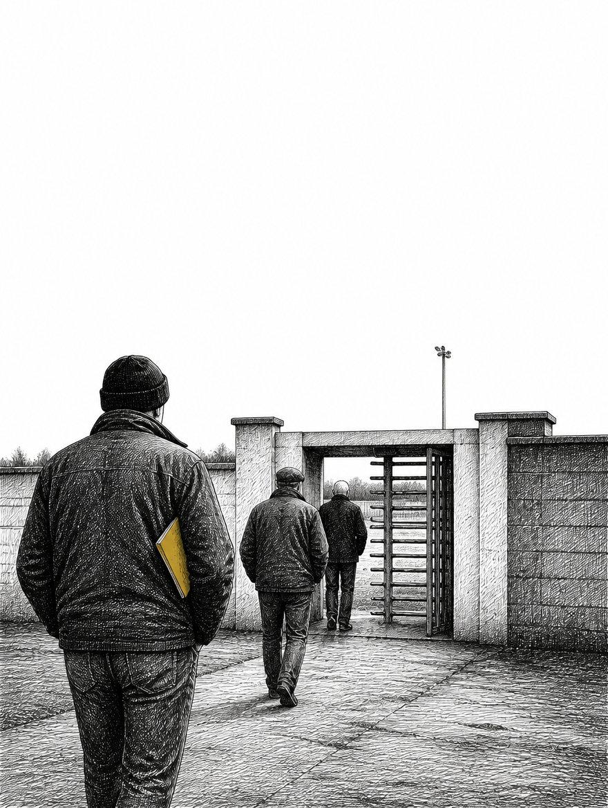
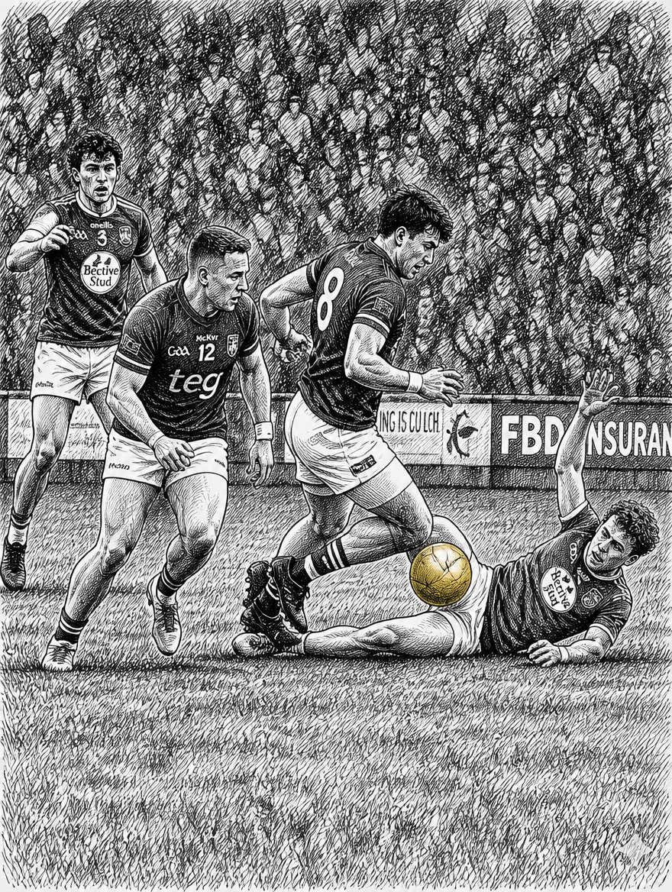
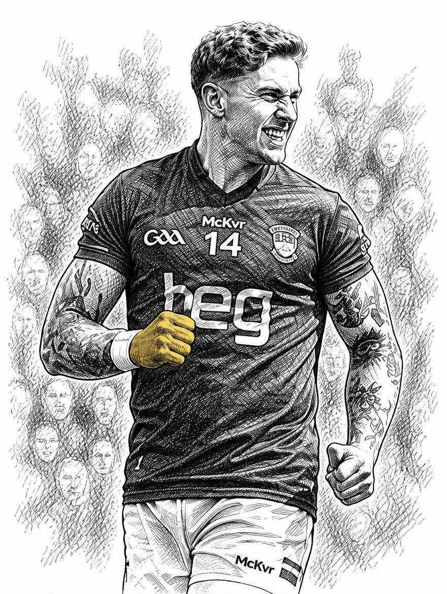
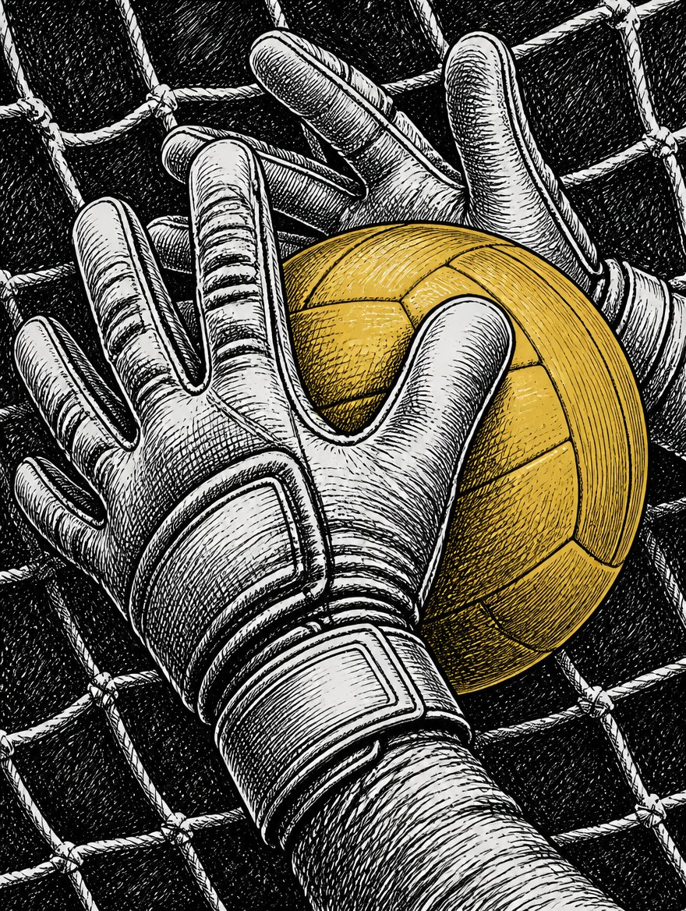
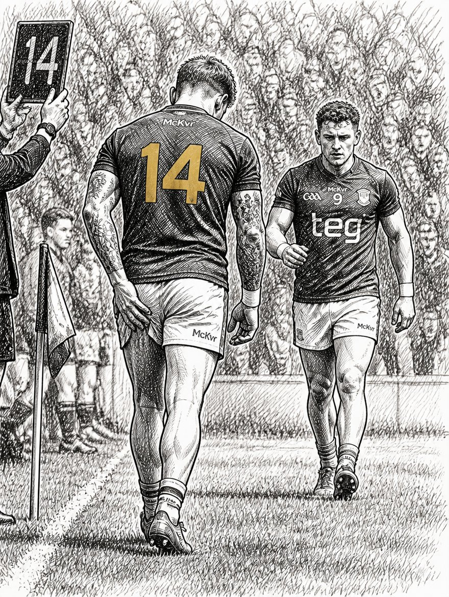
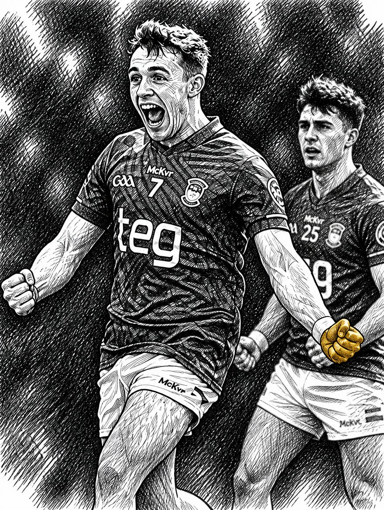
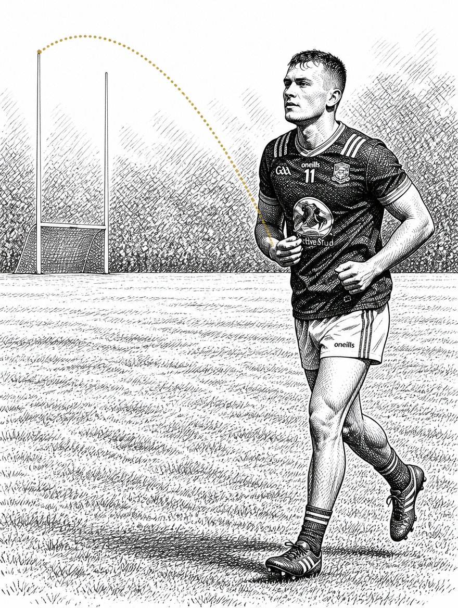
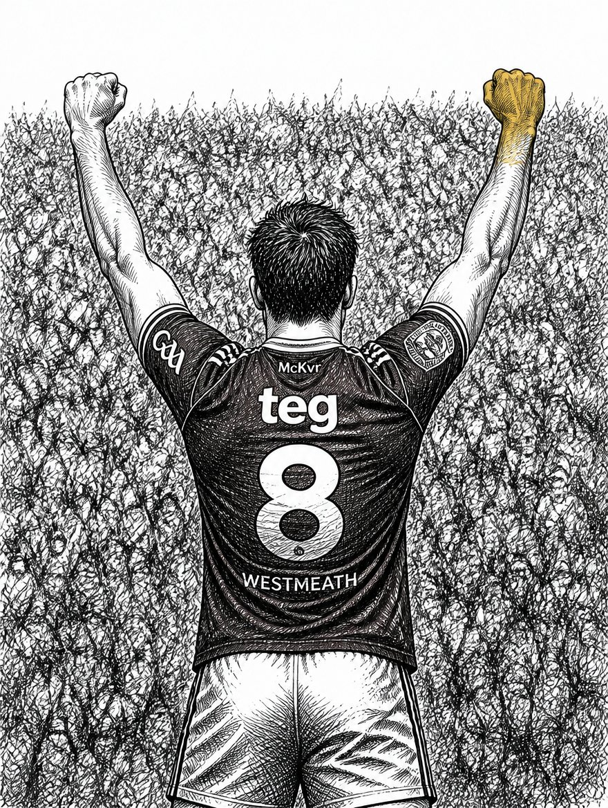
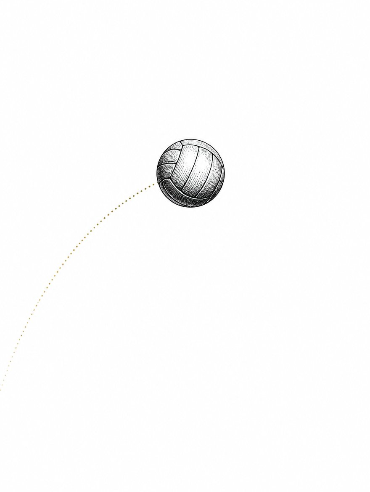
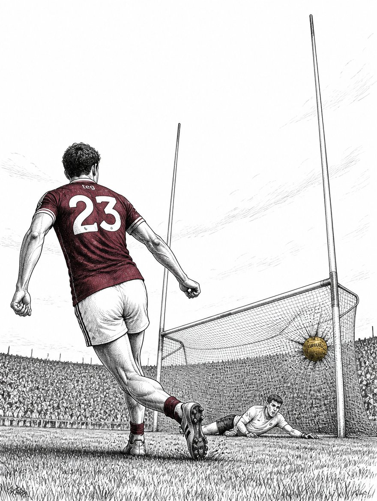

Meath came to Tullamore as Leinster favourites — Division 2 champions, All-Ireland contenders. Westmeath came as the team who'd put five goals past Longford a week before. Nobody gave them a prayer. By full time, the favourites were gone.









